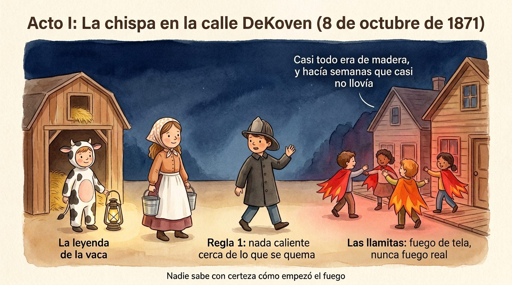
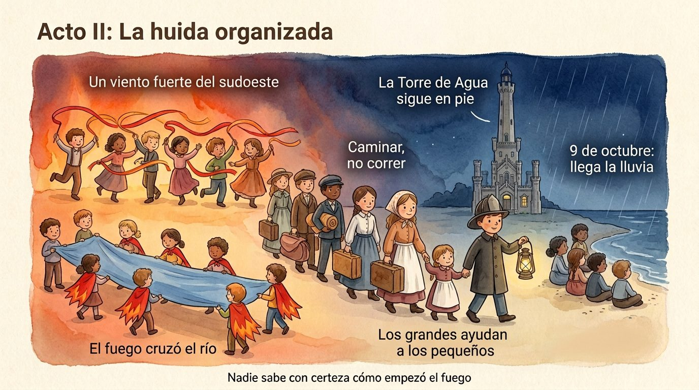
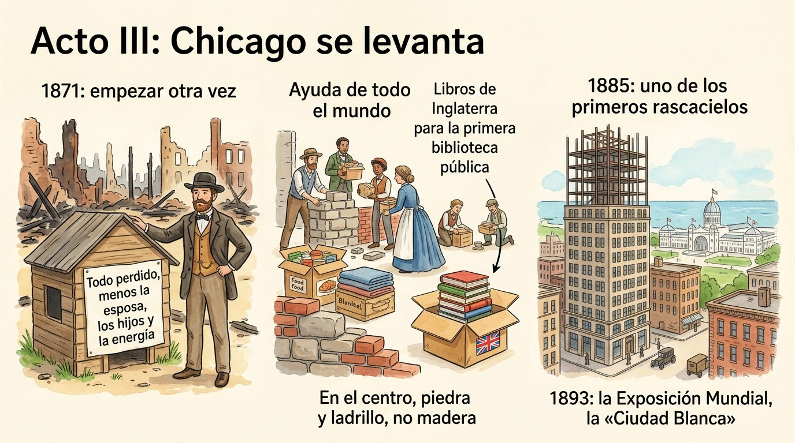
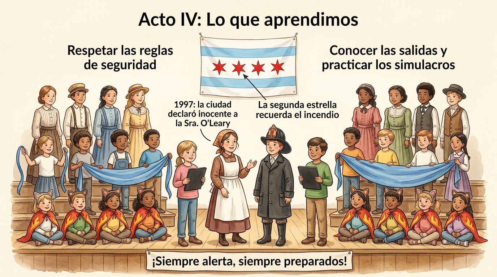

At a glance
- Running time: 18 to 25 minutes. About 7 minutes are spoken text; the rest is music, dances, entrances and exits, the chant and the bows.
- Cast: from about 45 children (a small group per grade) up to the whole school. Almost every group can grow or shrink without changing the script.
- Languages: the script is in English and Spanish, with the same lines in the same order: you can perform it in one language or mix acts.
- Safety: never use real flames or candles. All the fire is made of fabric, felt and LED light.
The play in pictures
Five infographics to introduce the play to teachers, children and families. Their labels are in Spanish.





Cast and numbers
The numbers are a guide. The “Minimum” column works for a small school or one classroom per grade; “Maximum” is for grades with several classrooms. The speaking parts are fixed; what grows is the groups.
| Grade | Part | Minimum | Recommended | Maximum | How it grows |
|---|---|---|---|---|---|
| 6th | Narrators 1 and 2 | 2 | 2 | 4 | Each narration can be split between two voices. |
| Mrs. O'Leary, Fire Chief, Architect | 3 | 3 | 6 | You can have two casts (one per performance or one per language). | |
| Water Tower and flag (no lines) | 1 | 3 | 3 | One holds the tower; two unfold the flag. | |
| Crew (see jobs) | 4 | 8 | 15 | Sound, lights, curtain, props, panels. | |
| Prompters | 0 | 1 | 2 | Follow the script backstage. | |
| 4th and 5th | Residents 1 to 4, Real estate agent | 5 | 5 | 10 | Speaking parts; can be doubled for two performances. |
| 4th grader and 5th grader (final line) | 2 | 2 | 4 | A small group from each grade can say the final line. | |
| Evacuees and builders (no lines of their own) | 6 | 16 | 40 | Cross with suitcases in Act II and build in Act III. | |
| 5th | Pre-K guides | 1 for every 3 Pre-K children | 1 for every 2 | 1 per child | Hold the little ones' hands during the evacuation. |
| 2nd and 3rd | Winds and embers (chorus) | 6 | 16 | 40 | The wavy line can be a single line or several, one behind the other. |
| 1st | Chicago River (chorus) | 8 | 12 | 16 | Depends on the length of the cloth: one child per meter (about 3 feet), in two rows. The rest can wave loose blue ribbons. |
| Kindergarten | Little Flames (chorus) | 6 | 12 | 30 | They enter in groups of 6, so they don't bunch up. |
| Pre-K | Daisy the cow and barnyard animals (chorus) | 4 | 10 | 20 | Daisy can be one child with an adult, or two children under a big costume. |
| Total | ≈ 50 | ≈ 115 | 200 or more |
Jobs for non-actors
Not everyone wants to or can speak on stage, and the play doesn't happen without these jobs. They are real roles: they appear in the program with the child's name.
🔊 Sound
4th to 6th · 2 childrenPlay each track at the right moment, following the cue sheet.
💡 Lights
5th and 6th · 2 childrenChange the LED lights: warm, flashing red, night blue.
🎭 Curtain and panels
5th and 6th · 2 to 4 childrenOpen and close the curtain and turn the back panels between Act II and Act III.
🧺 Props
4th to 6th · 2 to 4 childrenSet out the lantern, bucket, suitcases, blueprints and sign on a table, act by act, and put them away afterward.
📖 Prompter
5th or 6th · 1 or 2 childrenFollow the script backstage and whisper a line to anyone who forgets it.
🤝 Backstage guides
5th · 1 for every 2 or 3 little onesGo with Pre-K and kindergarten: take them to their places, go on stage with them and bring them back.
🎨 Sets
Any gradePaint the panels, the barn, the Water Tower and the Chicago flag in the weeks before the show.
👒 Costumes and makeup
4th to 6th, with an adultHelp dress the little ones, put on headbands and capes, and check that nothing comes loose.
📰 Posters and program
3rd to 6th · 2 to 4 childrenDesign the poster and the printed program, with the names of the whole cast.
🎤 Hosts
5th or 6th · 1 or 2 childrenWelcome the audience before the show and remind everyone to turn off their phones.
🎟️ Front of house
4th to 6th · 2 to 4 childrenGreet families, hand out programs and help people find seats.
📸 Photography
6th, with an adultTake photos only of children whose families gave permission (see the letter).
Free music
Tracks 1 to 6 are by composers who died more than a hundred years ago (the works are in the public domain), in recordings that can be used freely: those from Musopen, which are released without copyright, and those from the United States Marine Band, which, as works of the federal government, are in the public domain. Several pieces also come from the time of the play.
| Track | Piece | Why this one | Where to get it |
|---|---|---|---|
| 1 | The Irish Washerwoman, traditional Irish jig, on fiddle | Irish dance music, like that of the immigrants who lived on DeKoven Street, among them the O'Leary family. | Best played live, by a student or teacher who plays fiddle, flute or keyboard. There is also a 1939 recording at the Library of Congress, for educational use. |
| 2 | Edvard Grieg, In the Hall of the Mountain King (1875) | It starts very softly and grows faster and louder, like fire pushed by the wind. | Wikimedia Commons (Musopen) |
| 3 | Frédéric Chopin, Prelude Op. 28 No. 15, “Raindrop” | A repeating note like drops: the rain that helped put out the last of the fire. | Musopen (search “Chopin Prelude 15”) |
| 4 | Antonín Dvořák, Symphony No. 9 “From the New World,” 3rd movement (1893) | Energetic music, premiered in the United States in 1893, the year of the Chicago Exposition. | Wikimedia Commons (Musopen) |
| 5 | John Philip Sousa, The Liberty Bell (1893) | Sousa gave it this name in Chicago, during the 1893 World's Fair. | U.S. Marine Band |
| 6 | John Philip Sousa, The Stars and Stripes Forever (1896) | A cheerful march for the final bows. | Wikimedia Commons (Marine Band) |
| 7 | “Phoenix Chant,” original melody | Written for this play: simple, in a range comfortable for every grade, with the same melody in English and Spanish. | In the script, Phoenix Chant section: melody, accompaniment and sheet music. Free to use. |
Listen: melody in English · melody in Spanish · accompaniment only. Chords: C · C · F · G · Dm · G · Am · G · F · Am · C · F · G · F–G · C (C major, 6/8, dotted quarter = 72).
Cue sheet (sound and lights)
For the crew. Each cue is a change: it happens when the event in the “Signal” column takes place.
| No. | Act | Signal | Sound | Lights |
|---|---|---|---|---|
| 1 | I | The curtain opens | Track 1, cheerful | Warm daylight |
| 2 | I | Narrator 1 starts speaking | Track 1 fades out | — |
| 3 | I | Narrator 1 says “That night…” | — | Down to night light (soft blue) with a yellow light on the barn |
| 4 | I | The Fire Chief says “Stop!” | Silence | White light on the Fire Chief only |
| 5 | I | Daisy knocks over the lantern | Track 2, from the beginning | Flashing red and amber |
| 6 | II | The winds enter in line | Track 2 continues, louder | Flashing red |
| 7 | II | Resident 1 speaks | Track 2 lower, but not off | — |
| 8 | II | Narrator 2 says “…it began to rain” | Track 3 | Red slowly fades to dark blue |
| 9 | II → III | End of Narrator 1 in Act II | Track 3 fades out | Brief blackout: the panels are turned |
| 10 | III | Panels turned | Track 4 while the builders enter | Bright morning light |
| 11 | III | The Architect speaks | Track 4 fades out | — |
| 12 | III | Narrator 2 says “…in 1893” | Track 5, soft in the background | Bright white light |
| 13 | IV | Everyone gathers | Track 5 fades out | Full stage light |
| 14 | IV | Phoenix Chant | Track 7 (melody or accompaniment only), with claps | — |
| 15 | IV | Bows by grade | Track 6 | Full light; at the end, the curtain closes |
Costumes
| Part | Costume | Made by the school |
|---|---|---|
| Barnyard animals (Pre-K) | Comfortable clothes; a headband with the animal's ears. Daisy: white clothes with black felt spots. | Poster board or felt headbands. |
| Little flames (kindergarten) | Black or red T-shirt. | Cape or poncho of red, orange and yellow felt, cut into points. |
| River (1st) | Blue or gray T-shirt. | The blue river cloth and blue ribbons. |
| Winds and embers (2nd and 3rd) | Gray, light blue or white T-shirt. | Wrist ribbons: gray and white for the wind, red and orange for the embers. |
| Residents of 1871 (4th to 6th) | Boys: long-sleeved shirt, dark pants, suspenders, cap. Girls: long skirt or dress, white apron, hair tied back with a ribbon. | Ribbon suspenders, aprons made of fabric or white bags, poster board caps. |
| Mrs. O'Leary | Long skirt, blouse, white apron and headscarf. | Prop bucket and LED lantern. |
| Fire Chief | Dark jacket; in 1871 firefighters wore leather helmets and long coats, with no reflective stripes. | Red or black plastic helmet. |
| Architect | Vest, shirt, bow tie. | Rolled-up blueprints and a ruler. |
| Narrators | Simple period clothes or nice school clothes. | — |
| Crew | Black or dark clothes, so they don't draw attention. | — |
Costume and prop checklist
For each group's teacher: check each box when the child has everything ready. Print one per classroom.
Classroom: Teacher: Group's part:
| Name | Clothes from home | Piece made in class (cape, headband, ribbons…) | Props | Labeled with name | Ready for dress rehearsal |
|---|---|---|---|---|---|
Props by person in charge
- Bucket and LED lantern (Mrs. O'Leary) · new batteries
- Fire Chief's lantern · new batteries
- Daisy's headband and costume
- Blue river cloth, folded with no knots
- Sticks with fire streamers
- Suitcases, blankets, books and wheelbarrows (Act II)
- Water Tower cutout
- Blueprints, ruler, hammers and donation boxes (Act III)
- Real estate agent's shanty and sign
- Chicago flag
- Music tracks in order and tested on the sound system
- LED lights tested · colored tape on the floor
Sets and props
Sets
- Reversible back panels (foam board or heavy cardboard):
- Side A, Acts I and II: the wooden Chicago of 1871: board houses, plank sidewalks, gas lamps.
- Side B, Acts III and IV: the rebuilt Chicago: stone and brick buildings, orderly streets and, if you like, a skyscraper under construction.
- The barn (on the left): a cardboard frame shaped like a barn, with paper or raffia hay.
- The Water Tower: a large cardboard cutout painted the color of stone, with its castle-like tower. It is real: it was built in 1869 and still stands on Michigan Avenue.
- The Chicago River: a long blue cloth (6 to 10 meters, about 20 to 33 feet), satin or tulle, that two rows of children move in waves.
- The Chicago flag: made in class: white background, two light blue stripes and four red six-pointed stars.
Props by act
- Act I: tin or gray plastic bucket; prop lantern with an LED light.
- Act II: cardboard suitcases, rolled-up blankets, books, toy wheelbarrows; the Fire Chief's lantern.
- Act III: wooden or foam hammers, rolled-up blueprints, donation boxes; a small board shanty and the real estate agent's sign, which in English reads, like the original, “All gone but wife, children and energy,” and in the Spanish version, «Todo perdido, menos la esposa, los hijos y la energía».
Safe effects
- Flashing red and amber LED lights for the fire; dark blue for the night and the end of the fire.
- Sticks with light fabric strips, waved by hand or with a fan offstage, for the flames.
- Never candles, matches or artificial smoke: some children have asthma, and a fog machine can set off the alarms.
Stage plan
Seen from the audience. “Back” is farthest from the audience; “Front” is closest.
Act I
Audience
Act II
Audience
Acts III and IV
Audience
Rehearsals
Weeks 1 to 3: each group in its classroom
- 6th: read aloud, first sitting and then standing; the Fire Chief rehearses the freeze: one step forward, eyes on the audience, a calm and firm voice.
- 4th and 5th: the residents' lines and the evacuation march: quick but orderly, no running.
- 2nd and 3rd: the wavy line with ribbons, to the rhythm of track 2.
- Pre-K to 1st: 15-minute sessions: the animal sounds, the little flames' dance and the river's waves.
- Everyone: the Phoenix Chant with track 7 and claps.
Weeks 4 and 5: by blocks
- Block A (Act I): 6th with Pre-K and kindergarten.
- Block B (Act II): 4th and 5th with 1st to 3rd and the guides.
- Block C (Acts III and IV): 4th to 6th, and the final gathering of all grades.
- Crew: rehearses with the cue sheet while the blocks rehearse.
Last week: dress rehearsals
- Mark with colored tape on the floor where each group goes; entrances and exits with music.
- The whole play with costumes, lights and props, and the bows by grade.
Letter to families
Ready to print. Fill in the blanks by hand. At the end there is a slip to return signed.
School play: The Phoenix on the Lake
Date:
Dear family,
This year, the whole school, from Pre-K to 6th grade, will present The Phoenix on the Lake, a play about the Great Chicago Fire of 1871 and about how the city rose again, together. While they rehearse, the children will learn the history of our city and fire safety rules that work at home and at school.
Your child will be:
Clothes we ask for, if you have them at home (there is no need to buy anything):
The school will make the capes, headbands, ribbons, caps and aprons in class. If you don't have an item, let us know: we will have clothes to lend.
Important dates
- Bring the clothes, in a bag labeled with name and grade:
- Dress rehearsal:
- Performance: day , time , place
How you can help at home: if your child has lines, practice them together. The script is on Lumi, with a button to listen to each line and another to show only your child's character's lines: . It's also a good time to go over your home's emergency exit as a family.
Thank you for joining us!
Sincerely,
Return this slip signed by
Child's name: Grade:
I give permission for my child to take part in the play.
I give permission for the school to share photos or videos of the play in which my child appears.
I do not give permission to share photos or videos in which my child appears.
I can help with: costumes sets the day of the show
Signature: Phone: